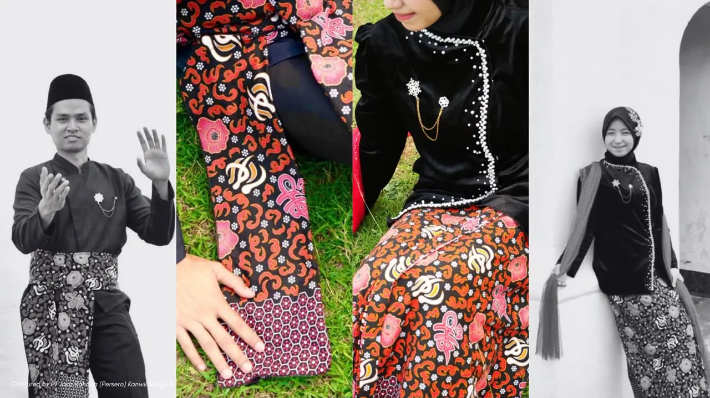
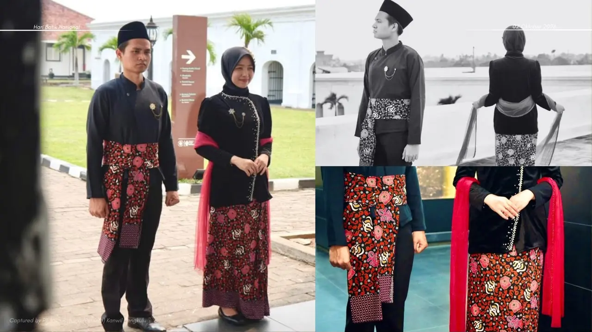
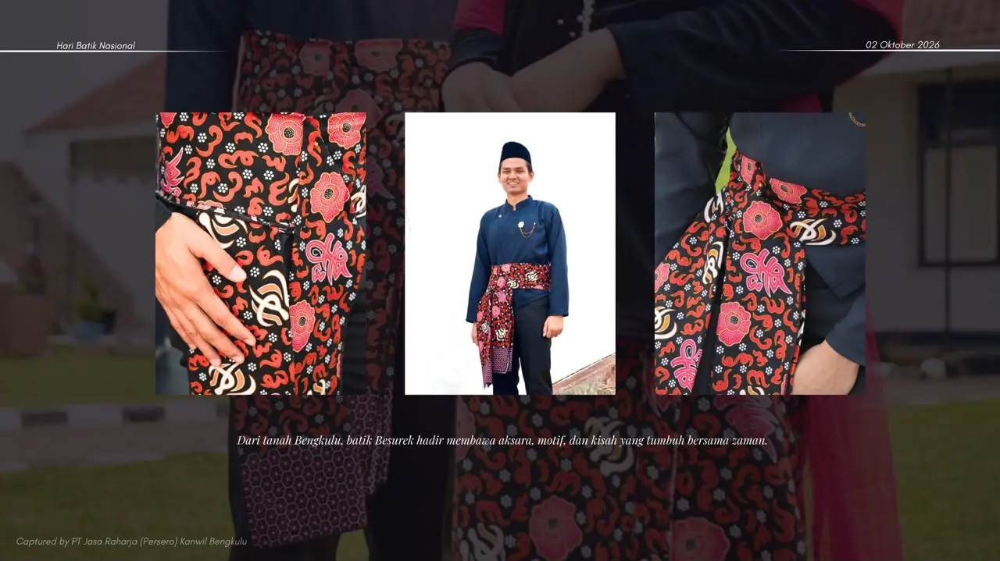
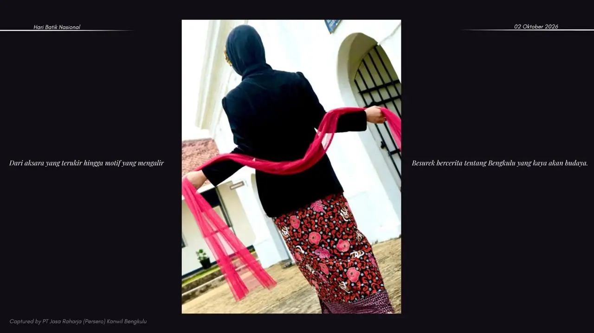
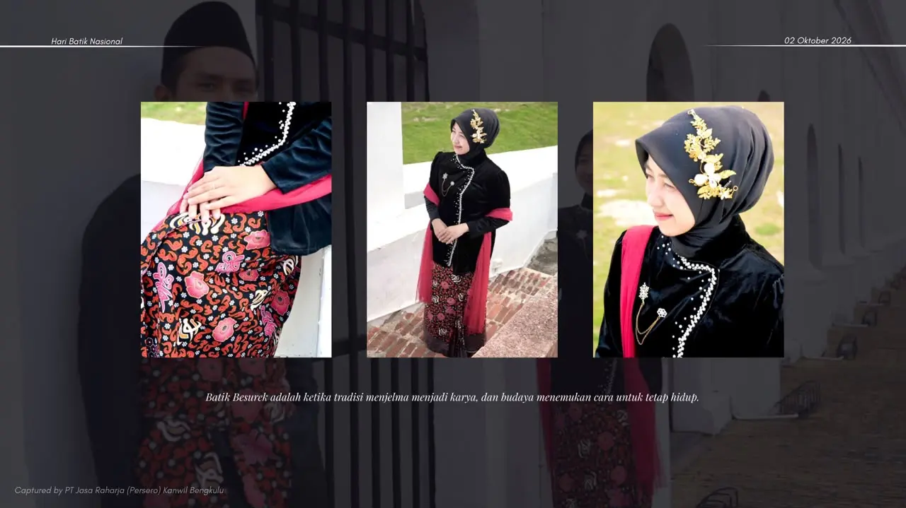
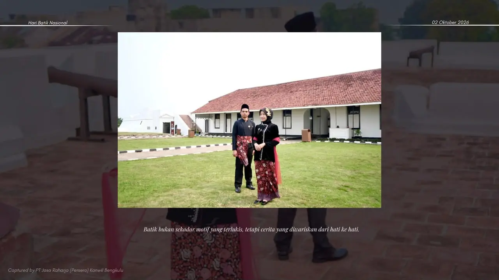

Lulusan Ilmu Komunikasi Universitas Sriwijaya. Saya meliput kegiatan, menulis press
release, mendokumentasikan lewat foto dan video, lalu memastikan informasinya sampai ke masyarakat dengan
tepat.
Berbasis di Bengkulu
Mengubah kegiatan menjadi informasi yang sampai ke publik
Peliputan & Press Release
Foto & Video Kegiatan
Pelayanan Publik
Pengalaman Kerja
Pilih kartu untuk melihat rincian tugas dan dokumentasinya.
Pengalaman terbaru
Humas Jasa Raharja
PT Jasa Raharja, Kantor Wilayah Bengkulu
Mengelola publikasi kegiatan kantor wilayah lewat akun resmi Instagram. Saya hadir di lapangan bersama
Kepolisian, Samsat, dan Dinas Perhubungan, lalu mengolah liputannya menjadi foto, video reels, dan konten
edukasi layanan untuk masyarakat Bengkulu.
Liputan keselamatan lalu lintas Sosialisasi keselamatan transportasi dan Operasi Patuh
Nala 2026.
Penyerahan santunan Dokumentasi santunan kepada ahli waris korban kecelakaan.
Edukasi layanan Konten JASFREN, cek plafon rawat jalan, dan kampanye Zebra Cross.
Kegiatan publik Samsat Keliling di Car Free Day dan Kapolda Cup Road Race Championship
2026.
Benteng Marlborough — PT Jasa Raharja Kantor Wilayah Bengkulu
Karya dokumentasi visual dan penulisan narasi budaya resmi yang diproduksi untuk publikasi PT Jasa Raharja Bengkulu, mengeksplorasi keindahan motif kaligrafi dan Rafflesia khas Besurek.

Harmoni Tradisi & Budaya
Motif khas kaligrafi Arab dan Bunga Rafflesia dalam balutan busana adat Bengkulu.

Anggun & Berwibawa
Dokumentasi keanggunan busana batik Besurek di area cagar budaya Benteng Marlborough.

Aksara Bersama Zaman
“Dari tanah Bengkulu, batik Besurek hadir membawa aksara, motif, dan kisah yang tumbuh bersama zaman.”

Kisah yang Mengalir
“Dari aksara yang terukir hingga motif yang mengalir, Besurek bercerita tentang Bengkulu yang kaya akan budaya.”

Tradisi Menjelma Karya
“Batik Besurek adalah ketika tradisi menjelma menjadi karya, dan budaya menemukan cara untuk tetap hidup.”

Cerita Hati ke Hati
“Batik bukan sekadar motif yang terlukis, tetapi cerita yang diwariskan dari hati ke hati.”
Pendidikan & Keahlian
Pendidikan
S1 Ilmu Komunikasi (S.I.Kom)
Lulus Jan 2024
Universitas Sriwijaya, IPK 3,88
Organisasi
Lembaga Pers Mahasiswa
UKM Basket Unsri
OSIS
Keahlian
Peliputan Kegiatan
Press Release
Fotografi
Videografi
Media Sosial
Notulensi Rapat
Naskah Pandangan Fraksi
Verifikasi Data & Dokumen
Koordinasi Antarinstansi
Administrasi & Pelaporan
Pelayanan Prima
Cara Kerja
LiputHadir di lokasi kegiatan
DokumentasiFoto dan video kegiatan
TulisPress release dan caption
VerifikasiCek data dan kelengkapan dokumen
PublikasiUnggah ke media sosial
LaporanRekap, evaluasi, dan arsip
Dokumentasi Kegiatan
Belum ada foto di kategori ini.
Mari bekerja sama
Saya terbuka untuk peran kehumasan, komunikasi publik, dan peliputan. Kirim pesan, saya akan membalas
secepatnya.
Mengelola publikasi dan konten media sosial resmi @jasaraharja_bengkulu_. Meliput kegiatan kantor wilayah bersama mitra
Kepolisian, Samsat, dan Dinas Perhubungan, lalu mengolahnya menjadi foto, video reels, dan konten informasi untuk
masyarakat.
Memproduksi kampanye fotografi resmi Hari Batik Nasional (Batik Besurek Bengkulu) di Benteng Marlborough.
Liputan sosialisasi keselamatan transportasi dan Operasi Patuh Nala 2026.
Dokumentasi penyerahan santunan kepada ahli waris korban kecelakaan.
Liputan Samsat Keliling di Car Free Day dan Kapolda Cup Road Race Championship 2026.
Pengelolaan sorotan Instagram seperti INFO SAMSAT dan BMCJR bulanan.
Jasa Raharja
LBJR Pelayanan
Langkah Bakti Jasa Raharja (LBJR)
Bertanggung jawab memastikan seluruh proses pelayanan Jasa Raharja kepada korban kecelakaan lalu lintas dan ahli
waris berjalan cepat, tepat, transparan, profesional, dan humanis.
Menangani dan memverifikasi data korban serta memeriksa kelengkapan dokumen.
Memproses penjaminan dan penyelesaian santunan, termasuk survei korban maupun ahli waris.
Memantau kecepatan dan ketepatan pembayaran santunan.
Berkoordinasi dengan Kepolisian, rumah sakit, fasilitas kesehatan, dan instansi terkait untuk mengoptimalkan
penanganan korban.
Mengunjungi korban di rumah sakit dan ahli waris, serta memberi edukasi tentang hak dan prosedur pengajuan
santunan.
Mendukung kegiatan preventif seperti Mobile Unit Keselamatan Lalu Lintas (MUKL).
Mengelola administrasi, input data, dokumentasi, pelaporan, dan evaluasi kualitas pelayanan sesuai budaya
pelayanan prima (service excellence).
Maret 2025 s.d. Oktober 2025
Staff Ahli Informasi Komunikasi Publik
Informasi Komunikasi Publik
Meliput kegiatan pemerintahan.
Mengikuti kegiatan Bupati, Wakil Bupati, dan kedinasan lainnya.
Membuat press release beserta foto dan video kegiatan.